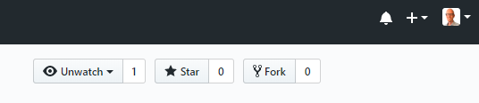

Ga naar Github, maak een Fork van de voorbeeld repository op
https://github.com/remkoduursma/cjibexample
Een fork is een kopie van de repository op je eigen account. Hiermee kun je oefenen zodat we niet allemaal tegelijkertijd op dezelfde code gaan werken.
Maak een Clone van de fork die je zojuist gemaakt hebt. Een clone is een kopie van een remote op je eigen machine. Maak de clone binnen een nieuw Rstudio project.
Oefen de volgende acties:
.gitignore bestand: voeg hier bestanden aan toe die je nooit wilt meenemen. Oefen dit!Herhaal bovenstaande stappen via de command line (Bash).
Maak eerst veranderingen, of voeg bestanden toe / verwijder bestanden.
Kijk naar de status :
git statusDit geeft een samenvatting van de veranderde/toegevoegde bestanden.
Voor een commit, eerst de gewenste bestanden stagen, bv:
# 1 Bestand stagen
git add newfile.txt
# Alle reeds toegevoegde bestanden stagen voor de nieuwe commit:
git add -u
# Alle bestanden (ook nieuwe) stagen
# Doe dit alleen als je goed naar git status gekeken hebt!
git add .
Het is ook nuttig om te kijken welke bestanden er bijgehouden worden in git:
git ls-filesNu dat de staging klaar is, kun je committen. Altijd goed om eerst nog naar git status te kijken!
git commit -m "Figuren bijgewerkt, code opgeschoond"En uiteindelijk een push naar de remote (dit hoeft niet elke keer als je een commit hebt gemaakt!)
git pushBehalve het onderstaande, lees ook 6.6 Using the command line.
Probeer de volgende commands:
Check of je wel de juiste remote hebt geconfigureerd met:
git remote -vHet is mogelijk om meerdere remotes toe te voegen (bv. zowel github als bitbucket).
git logDit geeft de geschiedenis van je repository. Als dit te lang is, druk q om te eindigen.
Probeer een oude commit te bekijken, bv. (maar gebruik hier de SHA van een van de commits in de git log):
git checkout abd45dJe bent nu in “Detached HEAD” - je kunt alleen rondkijken. Dit is heel handig om verwijderde bestanden / code te bekijken, en kopietjes te maken die je later weer kunt terugzetten.
Probeer bijvoorbeeld een bestand te verwijderen, dit te committen, en later weer terug te kijken door een git checkout te doen.
Om weer terug te keren naar de meest recente commit,
git checkout masterLees eerst Section 6.4.3.
Zoek een (of twee) partners met wie je gaat samenwerken. Nodig ze uit via github: op je project, ga naar “Settings/Manage Access/Invite a Collaborator” (dat laatste is een groene knop).
Zorg er nu voor dat jij en je partner dit project ook lokaal draaiend hebben (maak dus een Clone).
Als je samenwerkt, kun je in principe werken zoals altijd, maar dit is belangrijk:
Begin eerst met een Pull. Dit zorgt ervoor dat je de laatste versie van de remote op je machine draaiend hebt.
Maak commits zoals je voorheen deed.
Maak een Push : dit duwt jouw veranderingen naar de server. Je partner doet hetzelfde!
Als je nu verder werkt, en je wil weer een Push doen, gaat het voorkomen dat je partner dat ook heeft gedaan. Je krijgt dan een foutmelding dat “Updates were rejected because … behind its remote …”.
Om verder te gaan, doe eerst een Pull - dit voegt jouw partner’s veranderingen toe aan de jouwe. Als het goed is, gaat dat automatisch!
Samenwerken gaat goed, en makkelijk, zo lang je aan verschillende lijntjes code hebt gewerkt (zelfs binnen hetzelfde bestand is geen probleem).
Maar wat moet git doen als je dezelfde stukjes hebt veranderd?
Zorg ervoor dat jij en je partner dezelfde lijntjes code hebben veranderd, maak een commit / push / pull, en kijk wat er gebeurt!
Je kunt de conflicts handmatig repareren, en een nieuwe commit/push doen.